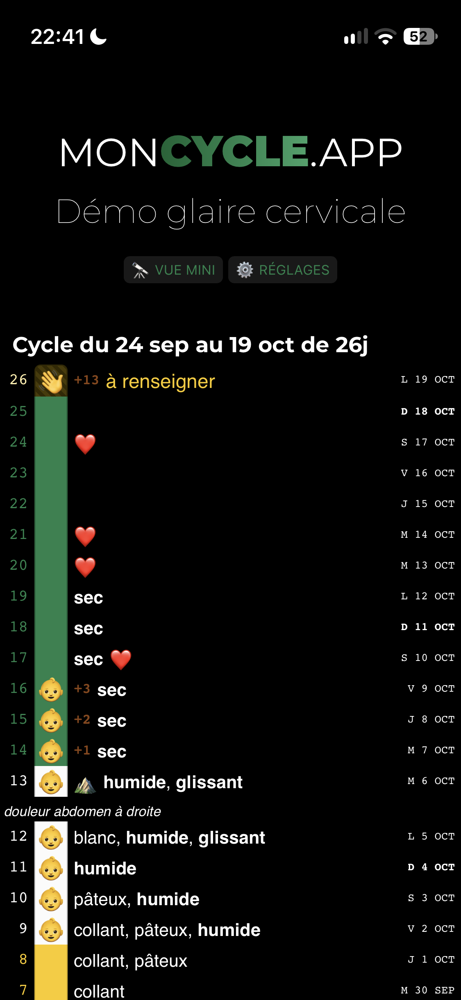
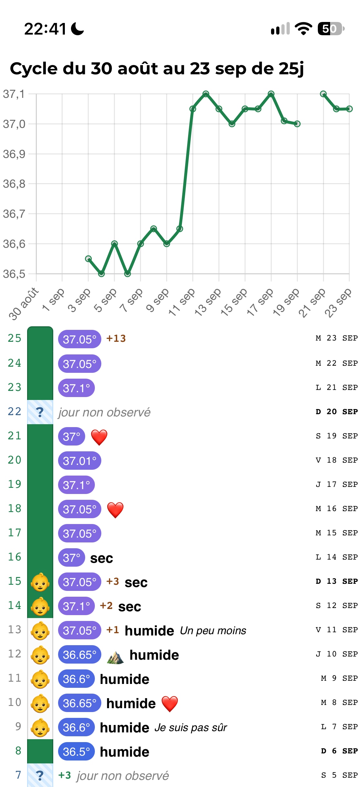
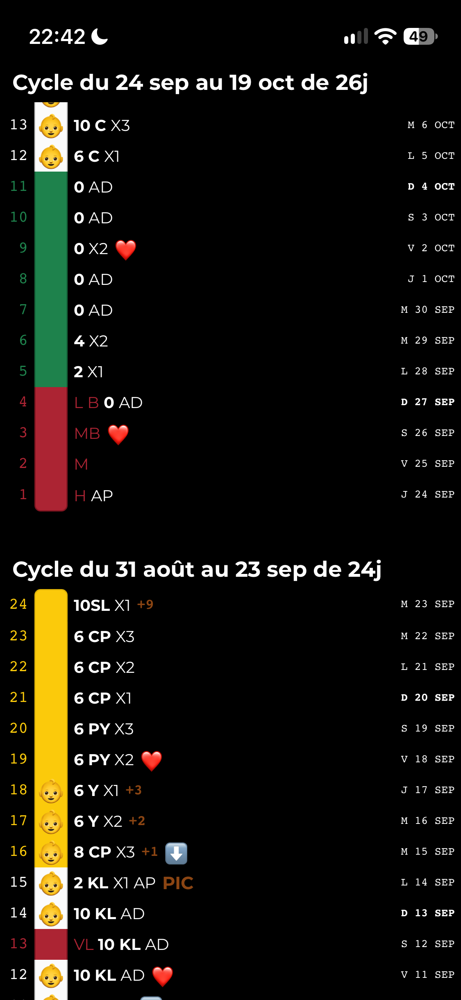
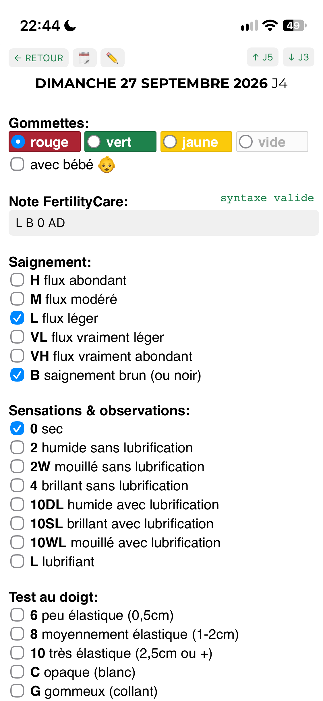
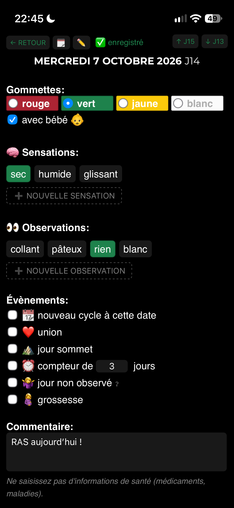
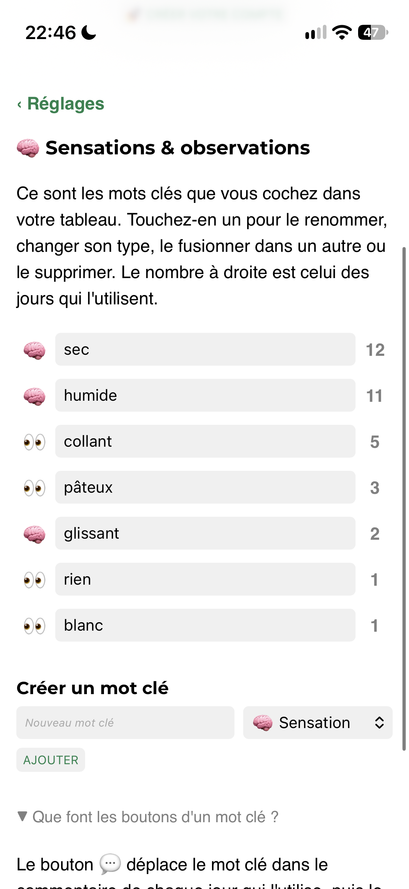
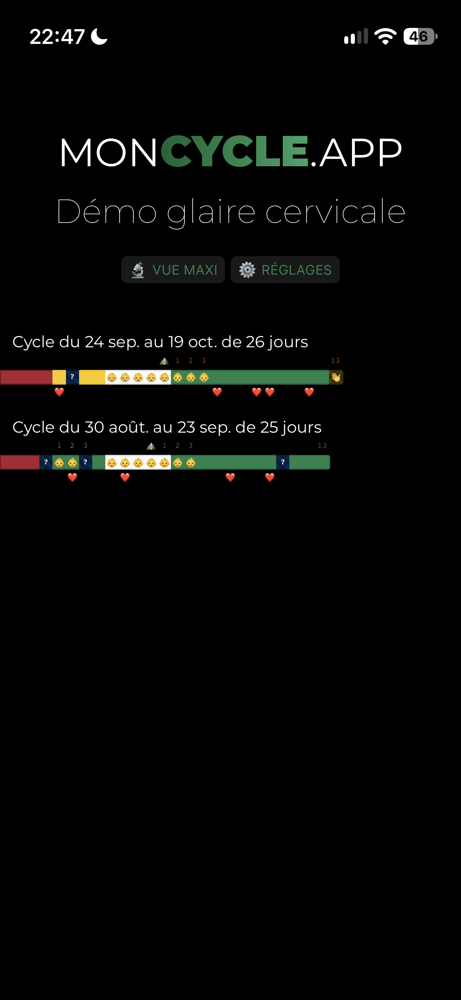
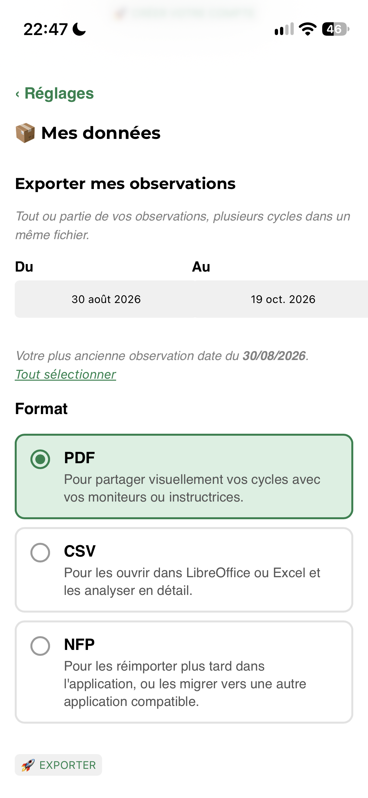

Billings · FertilityCare · Température
moncycle.app, le carnet de cycle des méthodes naturelles
Chaque soir, vous notez vos observations de la journée : glaire, saignements, et votre température si vous la prenez. L’application les range dans un tableau que vous savez lire, et votre moniteur aussi. Elle est gratuite, sans publicité, et ne prédit rien.
Application web pour téléphone et ordinateur, hébergée en France. Développée et distribuée par l’association Tech 4 Fertility.

Comment ça marche
Rien à installer depuis un magasin d’applications, rien à configurer pendant des heures. Il faut avoir appris sa méthode ; pour le reste, une saisie par jour suffit.
-
Vous créez votre compte
Un pseudo (vos initiales suffisent), une adresse e-mail qui ne donne pas votre nom, votre méthode. Vous cliquez sur le lien reçu par e-mail et votre tableau est prêt.
-
Le soir, vous notez la journée
Ce que vous avez senti et vu, les saignements, la température si vous la suivez, un commentaire si besoin. Un tampon de couleur vient marquer le jour.
-
Le tableau se construit
Jour après jour, dans la notation de votre méthode. Avec la température, une courbe s’affiche au-dessus du cycle.
-
Vous l’exportez ou le partagez
En PDF, CSV ou NFP, quand vous voulez. Chaque cycle terminé peut aussi partir tout seul par e-mail, vers vous et jusqu’à cinq adresses choisies : votre conjoint, votre moniteur ou votre monitrice.
L’installer sur votre téléphone
moncycle.app est une application web : vous ne la trouverez ni sur l’App Store, ni sur Google Play. Une fois connecté sur votre tableau, ajoutez la page à l’écran d’accueil. Une icône apparaît, et l’application s’ouvre ensuite comme les autres.
Sur iPhone, dans Safari : bouton Partager, puis « Sur l’écran d’accueil ».
Sur Android, dans Chrome : menu en haut à droite, puis « Ajouter à l’écran d’accueil ».
Tech 4 Fertility prépare des applications pour iPhone et Android. Nous l’annoncerons ici quand elles seront prêtes ; d’ici là, l’application web reste la seule version.
-

iPhone -

Android


Pourquoi moncycle.app
Elle est faite pour les femmes et les couples qui suivent une méthode naturelle. Elle remplace le carnet papier, sans jamais chercher à deviner à votre place.
Faite pour les méthodes naturelles
La glaire et les saignements Sensation, aspect, flux : tout ce que votre méthode vous a appris à observer.
La température, si vous la prenez Elle s’ajoute au tableau, avec sa courbe. Sinon, elle ne vous encombre pas.
Billings et FertilityCare Compatibles à 100 %, chacune avec sa propre notation.
Sans IA, sans prédiction Aucun calcul ne vous dit si vous êtes fertile. Le tableau montre ce que vous avez noté, rien de plus.
Au quotidien
Pensée pour le téléphone Et lisible aussi sur un ordinateur.
Mode sombre Pour la saisie du soir.
Sur tous vos appareils Vos données sont synchronisées entre le téléphone, la tablette et l’ordinateur.
Export PDF, CSV et NFP Pour imprimer, garder une copie ou changer d’outil.
Envoi automatique par e-mail Chaque cycle terminé arrive dans votre boîte, et chez qui vous voulez.
Vos données
Hébergées en France Chez OVH. Rien ne part hors de l’Union européenne.
Ni publicité, ni pistage, ni revente L’application vit des dons, pas de vos données.
Double authentification (TOTP) En option, avec un e-mail à chaque nouvelle connexion.
Open source Le code est public : chacun peut vérifier ce qu’il fait.
moncycle.app en chiffres
- comptes ouverts
- 2 190
- cycles enregistrés
- 18 000
- observations notées
- 372 700
Chiffres arrondis au .
Voir l’application
Le plus simple est encore d’y aller : deux comptes de démonstration sont ouverts à tous, sans inscription.
Essayer avec un compte de démonstration
Choisissez le compte de votre méthode et connectez-vous avec ces identifiants. Ces comptes sont publics : tout le monde peut les lire et les modifier, et ils sont remis à zéro toutes les heures. N’y saisissez rien de personnel.
- Billings
demo.mucus.self.obs@moncycle.app- FertilityCare
demo.fc@moncycle.app- Mot de passe
demo
Captures d’écran
Le tableau d’un cycle 
La saisie d’une journée 
Le mode sombre 
La notation FertilityCare 
Le choix de la méthode 
Plusieurs cycles côte à côte 
Températures et commentaires 
La courbe de température


Captures de la version précédente de l’application, en attendant celles de la nouvelle version.
Les méthodes naturelles
« Ce sont des méthodes basées sur la connaissance des signes de fertilité du cycle féminin. Le couple peut ainsi connaître avec précision les périodes fertiles ou infertiles qu’il traverse. En fonction de son projet d’enfant, il peut ainsi connaitre le meilleur moment pour transmettre la vie, ou quelles sont ses périodes infertiles lorsqu’il souhaite espacer ou limiter les naissances. »
Plusieurs méthodes existent, enseignées par différentes associations. Voici où en est moncycle.app avec les plus répandues en France (la liste n’est pas complète).
-
Méthode Billings
Compatible à 100 %Trouver un couple formateur auprès du Centre Billings France.
-
FertilityCare (NaProTECHNOLOGY)
Compatible à 100 %Trouver une instructrice auprès de FertilityCare France.
-
Cyclamen (symptothermie)
Partiellement compatibleL’application ne permet qu’une lecture partielle des courbes de température.
-
SensiPlan (symptothermie)
Partiellement compatibleMême limite : la courbe de température n’est interprétée qu’en partie.
-
Méthode M (M fertilité, symptothermie)
Partiellement compatibleMême limite que pour les autres méthodes symptothermiques.
Vous restez le cerveau derrière votre tableau
moncycle.app ne cherche ni à prédire, ni à vérifier que vous appliquez bien les règles de votre méthode, et elle ne remplace pas votre moniteur. C’est un support numérique, comme le carnet papier avant lui. Si vous découvrez les méthodes naturelles, ou si une règle vous pose question, adressez-vous à un moniteur de l’association qui enseigne votre méthode.
Histoire
John et Evelyn Billings, les médecins qui ont appris à lire la glaire
La méthode Billings porte le nom d’un couple de médecins de Melbourne, en Australie. Leurs travaux ont fait passer l’observation du cycle du calcul des dates à la lecture des signes du corps.
-
À la demande du père Maurice Catarinich, le neurologue John Billings commence à chercher une méthode naturelle de régulation des naissances. La méthode Ogino-Knaus, fondée sur un calcul de calendrier, est jugée trop imprécise. Son intuition : la glaire cervicale, dont l’aspect et la texture changent au fil du cycle, renseigne mieux que n’importe quel calcul sur l’approche de l’ovulation.
-
John Billings publie son premier livre, The Ovulation Method. Son épouse Evelyn, médecin elle aussi, en a relu le manuscrit : c’est ainsi qu’elle découvre ses travaux.
-
Evelyn Billings travaille désormais avec lui, en particulier sur les cycles difficiles à lire. Elle apprend à reconnaître, dans les tableaux des femmes, les schémas de sécheresse et de glaire qui précèdent l’ovulation, mais aussi ceux qui signalent les jours infertiles.
-
The Lancet publie l’étude des deux Billings, cosignée par H. G. Burger et par le chercheur James Brown, arrivé à Melbourne en 1962 pour créer l’unité d’endocrinologie du Royal Women’s Hospital. Les dosages hormonaux confirment ce que les femmes observaient : les changements de la glaire suivent les variations des œstrogènes et de la progestérone.
Ce qui a changé
Cette double validation, par l’observation et par les dosages, a donné aux méthodes naturelles une base scientifique qui ne reposait plus sur le seul calcul des dates. La méthode Billings a inspiré la méthode symptothermique, qui associe la glaire à la mesure de la température. On la retrouve aussi à l’origine des méthodes d’observation de la fertilité d’aujourd’hui, qui croisent plusieurs signes du corps.
Plus de soixante-dix ans après les premières recherches de John Billings, savoir lire sa glaire reste l’une des bases pour qui veut connaître son cycle.
Questions fréquentes
Les réponses s’appuient sur nos conditions d’utilisation, qui font foi en cas de doute.
Qu’est-ce que moncycle.app ?
Un carnet de suivi de cycle pour les méthodes naturelles : Billings et FertilityCare, avec ou sans température. Vous notez vos observations, l’application les affiche en tableau et les exporte. C’est une application web gratuite, utilisable sur téléphone comme sur ordinateur.
C’est un outil de bien-être. Ce n’est ni un dispositif médical, ni un moyen de contraception, ni un outil de diagnostic.
Qui développe moncycle.app ?
L’application est développée et distribuée par Tech 4 Fertility, une association française à but non lucratif (loi de 1901) dont le siège est à Vernon, dans l’Eure. Elle en est propriétaire depuis octobre 2026. Le code est public sur GitHub.
L’application est-elle vraiment gratuite ? Comment la soutenir ?
Oui. Il n’y a pas d’abonnement, pas de version payante, pas de publicité, et vos données ne sont jamais vendues. L’application vit des dons faits à Tech 4 Fertility, qui paient l’hébergement, le nom de domaine et le temps passé à la maintenir. Pour donner, voyez la rubrique Soutenir moncycle.app.
Comment créer un compte ?
Allez sur la page d’inscription. Il faut avoir 18 ans révolus. On vous demande :
- un pseudo (vos initiales suffisent) ;
- une adresse e-mail qui ne permet pas de vous identifier (évitez prenom.nom@…) ;
- un mot de passe d’au moins 10 caractères, que vous n’utilisez nulle part ailleurs ;
- votre année de naissance et la méthode que vous suivez.
Vous recevez ensuite un lien de confirmation, valable 3 jours. Un compte qui n’est pas confirmé est supprimé au bout de 7 jours.
Comment installer moncycle.app sur iPhone ou Android ?
moncycle.app n’est pas sur l’App Store ni sur Google Play : c’est une application web. Connectez-vous, ouvrez votre tableau, puis ajoutez la page à l’écran d’accueil. Sur iPhone, dans Safari, c’est le bouton Partager puis « Sur l’écran d’accueil ». Sur Android, dans Chrome, c’est le menu puis « Ajouter à l’écran d’accueil ». L’icône ouvre ensuite l’application directement.
Des applications pour iPhone et Android sont en préparation chez Tech 4 Fertility. Elles seront annoncées sur ce site.
Les applications de suivi de cycle sont-elles fiables ?
Tout dépend de ce qu’on leur demande. La plupart annoncent les prochaines règles ou la date d’ovulation à partir de la durée des cycles passés. C’est le principe de l’ancien calendrier d’Ogino, version numérique : il ne tient plus dès que les cycles varient, ce qui arrive à beaucoup de femmes.
Les méthodes d’observation font l’inverse : elles lisent les signes du cycle en cours, comme la glaire ou la température.
moncycle.app ne fait donc aucune prédiction. Elle enregistre ce que vous observez et le présente dans la notation de votre méthode. L’interprétation vous revient.
Peut-on utiliser une application de suivi de cycle comme contraception ?
Non. Une application n’est pas une contraception : c’est le carnet dans lequel vous écrivez. Si vous suivez une méthode naturelle pour espacer les naissances, ce qui compte, c’est l’observation quotidienne et l’application correcte des règles de la méthode, apprises auprès d’un moniteur formé.
moncycle.app ne vous dit jamais si un jour est fertile ou non, et ne vérifie pas votre lecture du tableau. Aucune méthode n’est efficace à 100 %, et l’application ne garantit ni qu’une grossesse soit évitée, ni qu’elle survienne. Les décisions vous appartiennent, à vous et à votre conjoint.
Mes données de cycle sont-elles privées ? Peuvent-elles être vendues ?
Les données de cycle sont parmi les plus intimes qu’on puisse confier à un téléphone. Avant de choisir une application, deux questions suffisent souvent : qui la paie, et où sont stockées les données ?
Pour moncycle.app :
- elle est financée par les dons, sans publicité, sans outil de pistage, et vos données ne sont ni vendues ni cédées ;
- les serveurs sont en France, chez OVH, et aucune donnée ne quitte l’Union européenne ; le traitement suit le RGPD ;
- personne à l’association ne consulte vos observations. En dehors de l’hébergeur, elles ne partent que vers les adresses e-mail que vous avez ajoutées vous-même, et vers la recherche si vous l’acceptez. Les autorités ne peuvent les obtenir que sur demande légale ;
- la participation à la recherche est facultative. Elle demande un second consentement, et les exports ne contiennent ni e-mail, ni pseudo, ni texte libre ;
- la connexion est chiffrée (HTTPS), les mots de passe sont stockés sous forme d’empreinte, la double authentification est disponible et chaque nouvelle connexion vous est signalée par e-mail.
Une limite à connaître : les e-mails de fin de cycle voyagent comme n’importe quel e-mail, sans chiffrement de bout en bout. Vous pouvez désactiver cet envoi dans « Mon compte ». Et comme le code est ouvert, tout cela peut se vérifier.
Enfin, ne saisissez ni votre nom, ni aucune donnée médicale (maladie, traitement, diagnostic) : l’application n’est pas faite pour les recevoir.
Puis-je exporter, synchroniser ou supprimer mes données ?
Oui, et sans avoir à écrire à qui que ce soit. Depuis « Mon compte », vous exportez vos cycles en PDF, CSV ou NFP, vous récupérez l’ensemble des données brutes du compte, vous importez des données et vous supprimez votre compte. La suppression est immédiate et définitive ; les sauvegardes s’effacent au plus tard 90 jours après.
Vos données sont synchronisées entre tous vos appareils. Si vous préférez tout garder chez vous, l’application peut aussi être auto-hébergée avec Docker ou YunoHost.
Que devient mon compte si je ne l’utilise plus ?
Un compte sans activité (ni connexion, ni saisie) pendant 4 ans est supprimé. Vous n’êtes pas pris au dépourvu : un e-mail de rappel part après 35 jours sans saisie, puis un avertissement 10 jours avant la suppression, à votre adresse de connexion et à vos adresses de notification. Pour garder votre historique, il suffit de vous connecter, ou d’exporter vos cycles avant.
Qu’est-ce qu’une méthode naturelle ? Est-ce la même chose que la méthode Ogino ?
Non, et la confusion explique une bonne part de la méfiance envers ces méthodes. La méthode Ogino, ou méthode du calendrier, déduit les jours fertiles de la durée des cycles passés. Les méthodes d’observation, comme Billings ou FertilityCare, lisent jour après jour les signes du cycle en cours : l’évolution de la glaire cervicale, et pour certaines la température au réveil. Rien n’est prédit : les signes se lisent au moment où ils apparaissent.
moncycle.app est faite pour ce second type de méthodes. Pour en savoir plus, voyez les méthodes naturelles et l’histoire des docteurs Billings.
Faut-il une formation pour suivre une méthode naturelle ?
Oui. Lire sa propre glaire demande quelques cycles d’apprentissage accompagné, et les règles de la méthode s’apprennent : quand s’ouvre une phase fertile, comment repérer le sommet, que faire d’un cycle perturbé. Nos conditions d’utilisation supposent d’ailleurs que vous avez suivi une formation.
moncycle.app n’enseigne rien et ne corrige pas votre lecture. En France, le Centre Billings France et FertilityCare France vous orientent vers des moniteurs, des couples formateurs ou des instructrices près de chez vous.
Comment observer la glaire cervicale ?
La glaire évolue au fil du cycle sous l’effet des hormones. À l’approche de l’ovulation, elle devient en général plus abondante, plus claire, plus élastique et glissante ; ensuite, elle s’épaissit ou disparaît. On note deux choses : la sensation ressentie à la vulve pendant la journée, et l’aspect de ce que l’on voit. On observe tout au long de la journée et on note une seule fois, le soir.
Chaque méthode a son vocabulaire et ses codes, qui ne s’échangent pas de l’une à l’autre : c’est votre moniteur qui vous les apprend. Dans moncycle.app, vos observations s’affichent dans la notation de la méthode choisie, pour que votre tableau soit lisible tel quel par votre moniteur ou votre instructrice.
Ces méthodes conviennent-elles aux cycles irréguliers, après une naissance, pendant l’allaitement ou à l’approche de la ménopause ?
Les méthodes d’observation ne supposent pas des cycles réguliers, puisqu’elles lisent le cycle en cours au lieu de le calculer. Mais ces périodes ont leurs propres règles (retour de la fertilité après l’accouchement, allaitement, fluctuations de la préménopause), et c’est là que l’accompagnement d’un moniteur compte le plus.
Dans moncycle.app, aucune durée de cycle n’est imposée et aucune prédiction ne vient se superposer à vos données : un cycle long, court ou atypique s’affiche normalement.
L’application utilise-t-elle l’intelligence artificielle ?
Non, et c’est voulu. Beaucoup d’applications mettent en avant des prédictions « intelligentes ». Elles restent une estimation statistique, appliquée à un corps qui ne suit pas forcément la moyenne, et peuvent rassurer à tort justement les jours où l’erreur coûte le plus.
moncycle.app enregistre, range et affiche. Il n’y a ni algorithme de prédiction, ni décision automatisée, ni profilage. La lecture du tableau reste la vôtre, selon les règles de votre méthode.
Avertissement. moncycle.app est un outil de notation. Ce n’est ni un dispositif médical, ni un moyen de contraception ; elle ne remplace ni la formation à une méthode naturelle, ni l’avis d’un professionnel de santé. Pour une question sur votre santé, votre fertilité ou les règles de votre méthode, parlez-en à votre moniteur ou à votre médecin. En cas d’urgence, appelez le 112.
Soutenir moncycle.app
moncycle.app est gratuite : pas d’abonnement, pas de publicité, pas de revente de données. Pour tenir, elle compte sur vos dons.
Ils paient les serveurs et l’envoi des e-mails chez OVH, le nom de domaine, et le temps nécessaire pour corriger, sécuriser et faire évoluer l’application d’une année sur l’autre. Les dons vont à Tech 4 Fertility, l’association qui porte le projet.
Paiement sécurisé par HelloAsso, plateforme française de dons aux associations.
Côté technique
moncycle.app est une application open source : une application web en HTML, CSS et JavaScript, sans étape de compilation, et une API HTTP en PHP sur une base MariaDB.
-
Code source sur GitHub
Application web, API, scripts de maintenance et documentation de déploiement.
-
Documentation de l’API
API v2 décrite en OpenAPI 3.0. Vous pouvez l’utiliser pour votre propre compte, avec un jeton d’accès créé dans « Mon compte ».
-
Image Docker
jeanio/moncycle.app: elle crée son schéma au premier démarrage et lance elle-même la tâche quotidienne. -
Installer avec YunoHost
Pour faire tourner votre propre instance sur un serveur YunoHost, depuis son interface d’administration.
-
Licence CC BY-NC-SA 4.0
Elle couvre le code ; vos données restent les vôtres.
-
État du service
La disponibilité est surveillée par updown.io, qui ne reçoit aucune donnée de compte.
Actualités
Chargement des actualités…
Les actualités n’ont pas pu s’afficher ici. Vous pouvez les lire sur la page des actualités.
Conditions d’utilisation et confidentialité
L’essentiel de nos conditions d’utilisation et de notre politique de confidentialité, conformes au RGPD.
moncycle.app est un carnet de suivi de cycle, un outil de bien-être. Ce n’est ni un dispositif médical, ni un moyen de contraception.
Il faut avoir 18 ans et avoir suivi une formation à sa méthode naturelle. Les décisions vous appartiennent.
Ne saisissez aucune information qui vous identifie, ni aucune donnée de santé médicale.
Gratuite, sans publicité ni pistage : vos données ne sont jamais vendues et sont hébergées en France.
Vous consultez, exportez, modifiez ou supprimez vos données à tout moment depuis « Mon compte ».
Un compte sans activité pendant 4 ans est supprimé, après avertissement.
Lisez les conditions d’utilisation et la politique de confidentialité complètes (version 2.0, en vigueur au 1er novembre 2026) avant de créer un compte. Elles existent aussi in English.